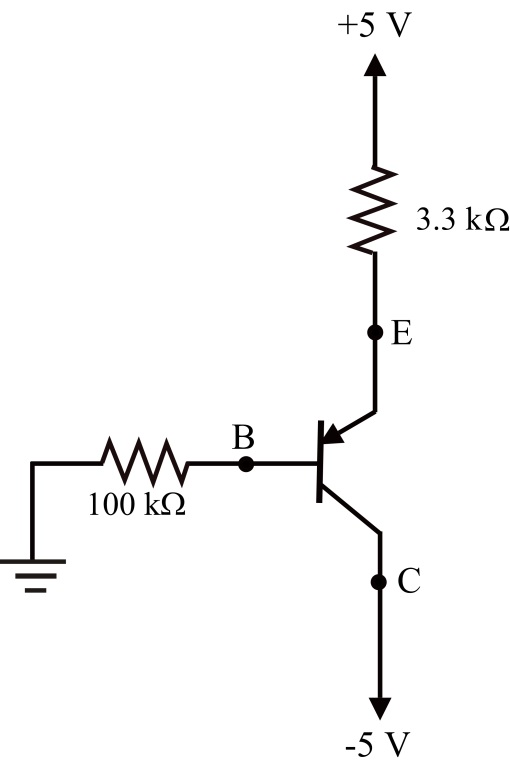
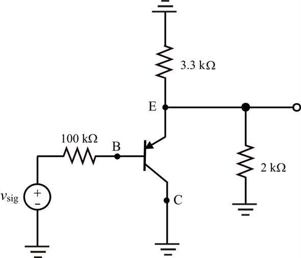
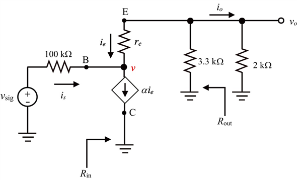
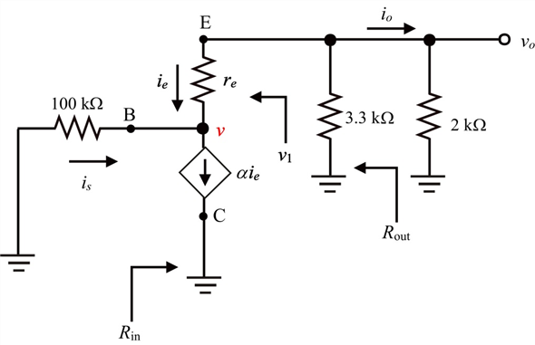

Apply Kirchhoff’s voltage law in input loop.
For PNP transistor, the base emitter voltage is 
Simplify further.
Simplify further.
Therefore, the value of DC emitter current is.
is.
Refer to the circuit diagram of common emitter amplifier in Figure P6.153 in the text book.
Draw the DC equivalent circuit diagram.

Figure 1
Apply Kirchhoff’s voltage law in input loop.
For PNP transistor, the base emitter voltage is
Simplify further.
Simplify further.
Therefore, the value of DC emitter currentis.
Determine the value of emitter resistance.
Determine the value of common base current gain.
Draw the AC equivalent circuit diagram.

Figure 2

Figure 3
Use current divider rule to determine the output current.
…… (1)
Apply Kirchhoff’s current law at node .
.
…… (2)
Determine the current gain.
Divide equation (1) with equation (2).
Determine the expression of input resistance using Figure 3.
Write the expression of  using Figure 3.
using Figure 3.
The input resistance  is,
is,
`
Substitute for  and 0.99 for
and 0.99 for .
.
Therefore, the value of input impedance is.
is.
Determine the expression of output resistance short circuit the input source as shown in Figure 4.

Figure 4
Substitute for  and 0.99 for
and 0.99 for  .
.
Simplify further.
Therefore, the value of output impedanceis .
.
Determine the value of output voltage.
Substitute from equation (1).
…… (3)
Determine the value of input voltage.
Substitute from equation (2).
…… (4)
Determine the voltage gain.
Divide equation (3) with equation (4).
Substitute for  and 0.99 for
and 0.99 for .
.
Therefore, the value of voltage gain is.
is.